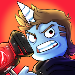
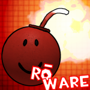
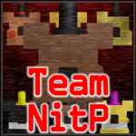

I am a computer science student and researcher in title, and a programmer, problem solver and learner at heart.
I have been programming at some capacity since 2012, when I started making my own games with Lua and Roblox. Ever since then, I have been exploring different areas in computer science and learning new technologies and languages, largely by myself.
In recent years I have been aiming to refine my skills and to formalize my education at university. I study at the State University of Maringá (UEM), in Brazil.
Skills
I have experience with the following technologies and programming languages:
- Rust
- Lua
- C
- Python
- HTML/CSS
- JS
- Java
- FastAPI
- MongoDB
- Roblox
My areas of interest include programming language design and implementation, game development, game design, systems programming, tooling, information security, machine learning, artificial intelligence, mathematics and computer graphics, among others. I also enjoy teaching and learning new topics.
Projects
Many of my past projects can be found at my GitHub profile.
Code
-
PET-Informática website backend
2022 - 2024
I worked on the backend of the website for PET-Informática, which handles among other things registrations for courses and events, and the management of the group's members.
The repository is currently private.
-
Website for Freshmen's Welcome Week at UEM
2022 - 2023
I developed together with other members of PET-Informática the websites for the 2022 and 2023 Freshmen's Welcome Week, for the Department of Informatics at UEM.
-
Scoreboard Algorithm Emulator
2023
I wrote together with my colleagues a program that emulates the Scoreboard algorithm, which is a dynamic instruction scheduling algorithm in computer architecture, as described in the book 'Computer Architecture: A Quantitative Approach' by David A. Patterson and John L. Hennessy. The program contains an assembler for a MIPS-like assembly language and a CPU simulator which implements the algorithm in detail. The program is written in C and was developed for the computer architecture course at UEM.
-
Advent of Code 2022 solution set
2022
I participated in the 2022 edition of Advent of Code. This repository contains my solutions to the 50 problems written in Python.
-
clox-rust
2021
This repository contains an implementation of the Lox programming language, as described in the book 'Crafting Interpreters' by Bob Nystrom, written in Rust. The codebase features a bytecode compiler and a virtual machine.
IRL
-

SECOMP
2022 - 2023
I have been involved in organizing the 2022 and 2023 editions of SECOMP, the Week of Computer Science at UEM, where IT professionals offer talks and workshops to students and the general public, and where companies can showcase what they are working on and any job openings they have. Some of the tasks I performed while involved in SECOMP include: developing the event's website, dialoguing with companies and speakers, coordinating the event's staff and more.
-
PET-Informática
2022 - 2024
During my time at UEM, I have been involved with PET-Informática, a group of students that aims to promote the development of its members through activities related to research, teaching and extension. While a member of PET-Informática, I have offered and taught numerous courses and workshops on various technologies and programming languages to students. I have also helped organize events, such as SECOMP, participated in candidate selection processes for the group and conducted academic research, among other activities.
Roblox
Roblox was my first introduction to programming. I joined it in 2009 and it has accompanied me throughout most of my programming career.
-

Captive
2020
Contract work - gameplay programmer
Captive is a stealth multiplayer game with over 50M+ play sessions where players must work together to escape a facility while avoiding the beast. I worked on the game's player ability system.
-

ROWare
2016 - 2018
Lead developer
ROWare is a competitive multiplayer game where players get to complete tasks and microgames to earn points and win. I developed the game in its entirety, including assets and code.
-

Team NitP
2015 - 2018
Founder and Lead Developer
Team NitP is a Roblox game development team that I founded in 2015 that houses fan-games related to the Five Nights at Freddy's franchise. Our games have been played over 9.3M+ times in total since 2015.
I have also provided localization services to games such as Adopt Me, Circus Trip and Deathrun, among others, which in total have been played billions of times.
If you're interested in other projects I have worked on, please visit my Roblox profile.
Research
My research work has been mainly in the area of machine learning and artificial intelligence.
At the moment, I am working on a research project related to acoustic scene classification, which is a task in the area of audio signal processing that aims to classify audio recordings of environments into different categories. This project is being developed under the orientation of prof. Dr. Yandre Costa, at UEM.
In the past, I have worked on a research project related to search-based software engineering, which aims to apply machine learning techniques to solve hard software engineering problems. I have co-written a paper in this area which was published in the 17th Brazilian Symposium on Software Components, Architectures, and Reuse, and which won a Distinguished Paper Award.
More details about my research work can be found in my Curriculum Lattes and my past publications in my ORCID profile.
Education
-
Universidade Estadual de Maringá
Bachelor's degree, Computer Science
2021 - 2025 (ongoing)
Contact me


My email is my name, period, surname at gmail dot com.